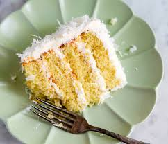

Gluten Free Coconut Cake

Moist Gluten Free Coconut Cake
This dish is a perfectly moist gluten free coconut cake, and is perfect for those with allergies or food restrictions!
Ingredients
- 2 cups gluten free flour
- 1.5 cups white sugar
- 1 cup flaked coconut
- 0.5 cup chopped walnuts
- 1 tablespoon baking powder
- 1 teaspoon baking soda
- 1 teaspoon xanthan gum
- 1 teaspoon salt
- 1 cup coconut milk
- 1 cup vegetable oil
- 4 eggs
- 1 teaspoon vanilla extract
Steps
- Preheat oven to 350 degrees F (175 degrees C). Grease and flour a 9x13-inch baking dish.
- Whisk flour, sugar, coconut, walnuts, baking powder, baking soda, xanthan gum, and salt together in a bowl. Add coconut milk, vegetable oil, eggs, and vanilla extract; mix until batter is smooth. Spread batter into the prepared baking dish.
- Bake in the preheated oven until a toothpick inserted in the center comes out clean, about 45 minutes.